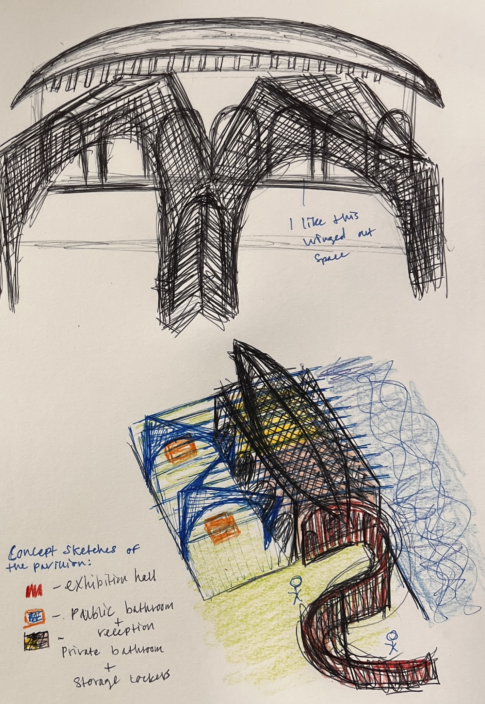
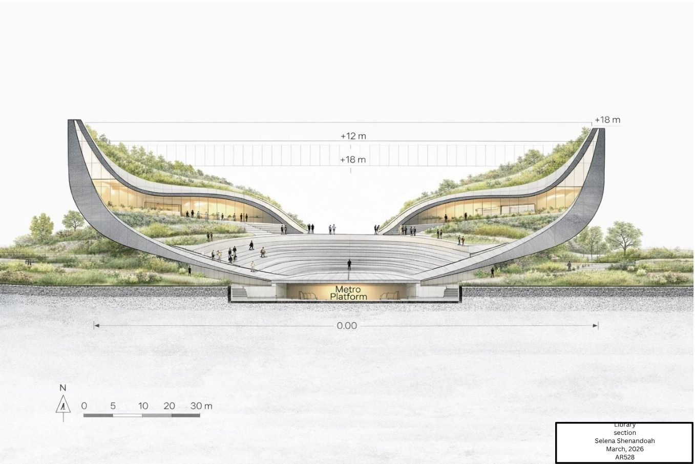
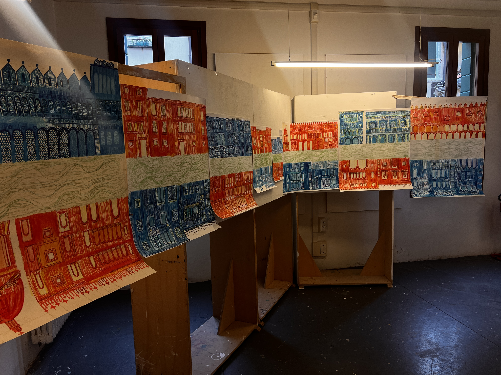
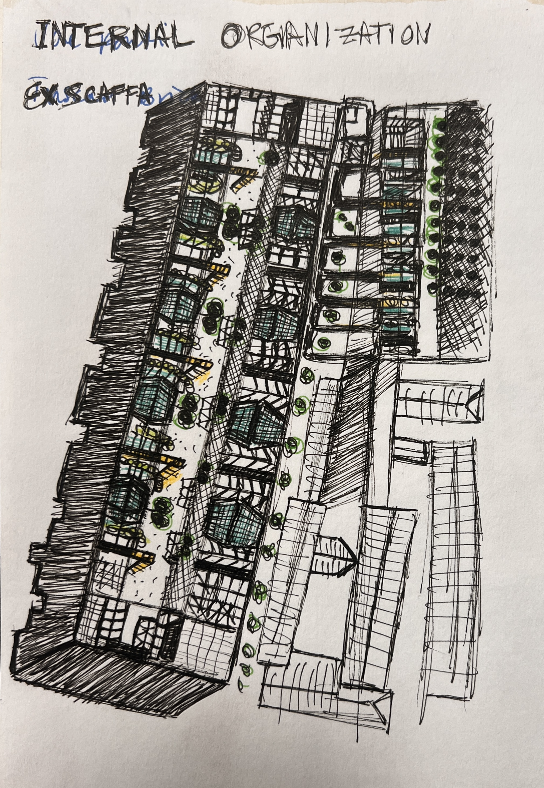
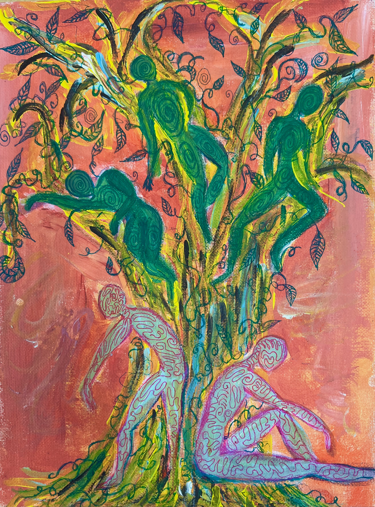
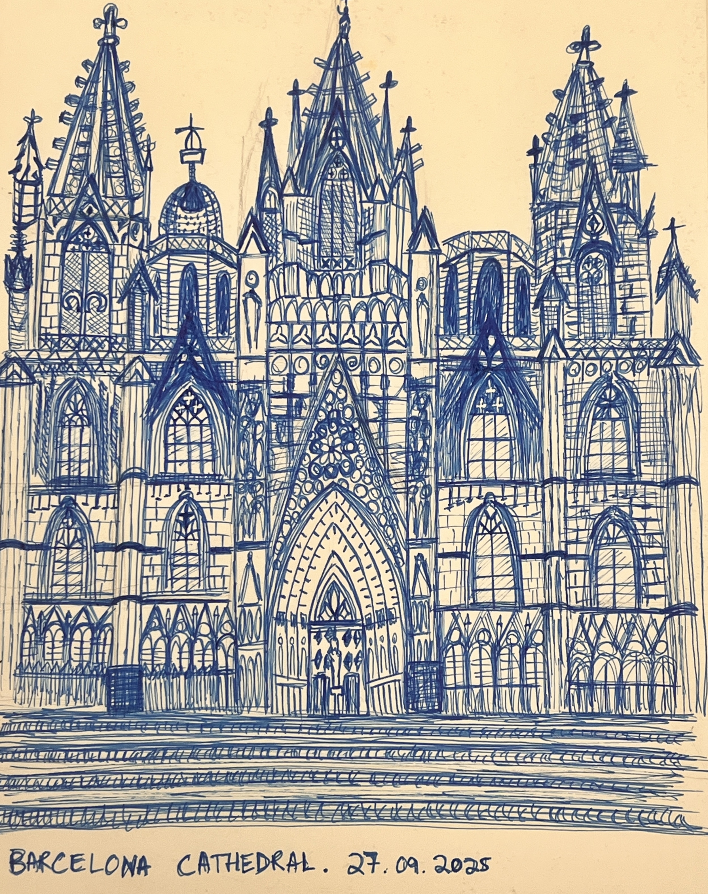

Design of an exhibition space for an art school in Venice. Massing derived from the form of a Venetian gondola, with a sweeping roof structure and continuous glass walls on the upper level. Produced in AutoCAD with physical model in wood, plexiglass, and cardboard.
Venice Series →
A public library designed as a symbolic "set of hands" within the urban fabric. Precedent study of Snøhetta informed the integration of building and landscape. Project operates across three scales: city block, building, and room. Produced for AR528 Architectural Site Design II.
View Project →
Large-scale observational drawing of the Grand Canal, approximately seven meters by two meters. Pen, markers, and acrylic paint layered to capture the density and vibrancy of Venetian facades. Final project for the Drawing Venice course.
Venice Series →
Analytical study of a Venetian apartment residence after Vittorio Gregotti. Produced plan drawings, elevations, and analysis of spatial organization and material composition.
Venice Series →
A personal practice in painting and mixed media attending to light, the natural world, and figural subjects. Works include Tree of Dreams, Dante, Lillies, The Last Dance, and Jumping Into the Sun.
View Art →
Hand drawings made while traveling across Europe, including Barcelona Cathedral and residential facades in Oslo. A practice of close architectural observation carried alongside studio work.
Drawings →